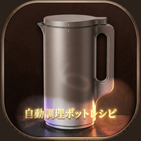

操作は【SELECT】ボタンを押してモードを選ぶだけ。時間は機械が決めるので、自分で設定するところはありません。 お知らせランプ1→2→3の順に、点滅から点灯に変わります。 ※ 具材を入れ忘れたときは、お知らせランプ2の点滅中（30秒以内）ならフタを開けて足せます。
かならず 液体からさきに 入れます。刃が液体を巻きこんでうずを作り、 上のかたい食材を引きずり下ろして刻むためです。逆にすると刃が回らず、止まってしまうことがあります。
① 液体（水・牛乳・しょうゆなどの液体調味料） ② やわらかいもの（バナナ・玉ねぎなど） ③ かたいもの（にんじんなど）、肉・魚 ④ 氷（家庭用製氷機のもの、2.5cm以下）
※ 粉の調味料（砂糖・塩・こしょう）、すりおろしのしょうが・にんにくは、かたい食材のあとに入れます。 ※ 材料は 2〜3cm角 に切り、芯や種は取りのぞきます。 ※ 量は 300mlラインからMaxラインのあいだ。生米は水のすぐあとに入れて、完全に水にしずめます。
牛乳・豆乳は加熱すると表面に膜ができ、その下で一気に泡が上がってふきこぼれます。
・牛乳や豆乳を少量だけ使うと泡立ちやすいので、レシピの分量どおりに。 ・牛乳のかわりに豆乳を使うときは 豆乳2：水1 で薄めます。 ・じゃがいも・里芋などでんぷんの多いものを入れすぎると、とろみが強くなって対流が止まり、 底が焦げて加熱が止まります。アレンジは公式の分量を目安に。
注ぎ終わったらすぐに、水かぬるま湯を300mlライン（MIN）くらいまで入れて、 台所用中性洗剤を1〜2滴。フタをして 【JUICE&CLEAN】モード（約3分） で自動クリーニングします。 そのあと電源コードを抜き、プラグ挿入口カバーを閉じてから水ですすぎ、よく乾かします。 本体の外側と電源コードは水洗いできません。刃の裏は付属のブラシで。
放置すると刃に残った調理物がこびりついて故障の原因になります。すぐ洗えないときは、水を入れておくだけでもかまいません。
上の 📖 ボタンから、レコルト公式サイトの写真つきレシピ 品をひらけます。 アプリの中のレシピにも 「📷 公式ページで写真を見る」 ボタンが出ます。 公式の写真はこのアプリの中には取りこんでいません。よその写真を勝手に配ることはできず、画像のURLもいずれ切れてしまうためです。
自分で撮った写真は貼れます。レシピをひらいて 「📷 できあがりの写真をつける」 から、その場で撮るか写真アプリから選べます。 写真は自動で小さく（長辺900px）してから保存しますが、入れられるのは20〜30枚くらいが目安です。
レシピはこの端末のブラウザの中だけに保存されています。機種変更やSafariのデータ削除で消えます。 ときどき書き出してファイルに残してください。写真も一緒に書き出されます。
Safari下の 共有ボタン → ホーム画面に追加。 アプリのように開けて、しばらく使わなくてもレシピが消えにくくなります（iOSの仕様）。
お手本レシピだけを追加し直します。自分で作ったレシピは消えません。
※ お手本レシピは、レコルト公式サイトのレシピをもとにしています。分量や仕上がりは食材によって変わります。 ※ 材料を入れた状態で本体を傾けないこと。フタと本体のスイッチマーク（▼▲）が合っていないと運転しません。 ※ おかゆの保温はおすすめされていません。
レコルト公式サイトの、自動調理ポットで作れるレシピ 品です。 タップすると公式ページがひらいて、できあがりの写真と作り方が見られます。